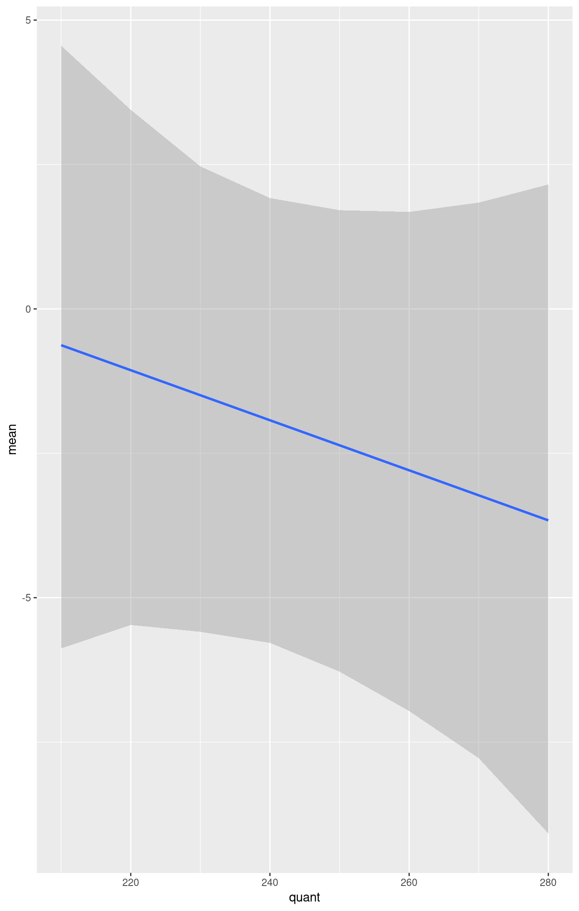
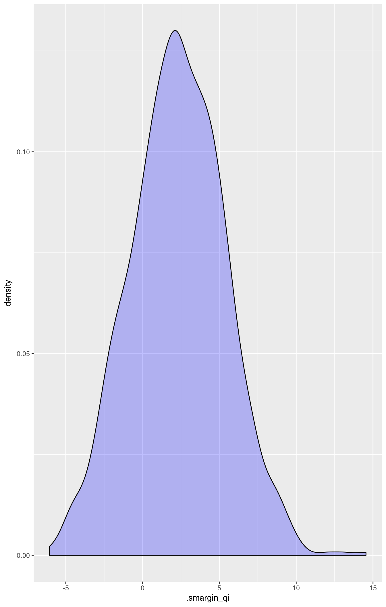

Attaching the sample dataset:
library(survival)
data(tobin)Estimating linear regression using tobit:
## consider these two models:
data=tobin, dist='gaussian')Summarize estimated paramters:
summary(m1)##
## Call:
## survreg(formula = Surv(durable, durable > 0, type = "left") ~
## age + quant, data = tobin, dist = "gaussian")
## Value Std. Error z p
## (Intercept) 15.1449 16.0795 0.942 3.46e-01
## age -0.1291 0.2186 -0.590 5.55e-01
## quant -0.0455 0.0583 -0.782 4.34e-01
## Log(scale) 1.7179 0.3103 5.536 3.10e-08
##
## Scale= 5.57
##
## Gaussian distribution
## Loglik(model)= -28.9 Loglik(intercept only)= -29.5
## Chisq= 1.1 on 2 degrees of freedom, p= 0.58
## Number of Newton-Raphson Iterations: 3
## n= 20Setting values for the explanatory variables to their sample averages and simulating quantity of interest.
library(smargins)
summary(m.sm)## quant mean sd median lower_2.5 upper_97.5
## 1 210 -0.6283012 2.725337 -0.606587 -5.878629 4.556931
## 2 220 -1.0615717 2.351930 -1.047042 -5.471870 3.446931
## 3 230 -1.4948423 2.077732 -1.541911 -5.590536 2.467526
## 4 240 -1.9281129 1.945160 -2.005974 -5.782240 1.919111
## 5 250 -2.3613834 1.982829 -2.456732 -6.280053 1.708785
## 6 260 -2.7946540 2.181938 -2.898043 -6.962013 1.678773
## 7 270 -3.2279245 2.504271 -3.267990 -7.778296 1.839742
## 8 280 -3.6611951 2.909155 -3.711762 -9.082322 2.153392
library(ggplot2)
stat = "identity")## Warning: Ignoring unknown aesthetics: ymin, ymax
Set explanatory variables to their default(mean/mode) values, with high (80th percentile) and low (20th percentile) liquidity ratio (quant):
summary(m.sm2)## quant mean sd median lower_2.5 upper_97.5
## 1 218.4 -1.004966 2.375453 -1.017309 -5.629625 3.476961
## 2 270.2 -3.311252 2.567358 -3.319656 -8.382085 1.743507Estimating the first difference for the effect of high versus low liquidity ratio on duration( durable):
## quant mean sd median lower_2.5 upper_97.5
## 1 218.4 vs 270.2 2.306287 3.043227 2.277627 -3.627821 8.411845

\[ \begin{aligned} Y_i^* & \sim & \textrm{Normal}(\mu_i, \sigma^2) \\\end{aligned} \]
where \(\mu_i\) is a vector means and \(\sigma^2\) is a scalar variance parameter. \(Y_i^*\) is not directly observed, however. Rather we observed \(Y_i\) which is defined as:
\[ Y_i = \left\{ \begin{array}{lcl} Y_i^* &\textrm{if} & c <Y_i^* \\ c &\textrm{if} & c \ge Y_i^* \end{array}\right. \]
where \(c\) is the lower bound below which \(Y_i^*\) is censored.
\[ \begin{aligned} \mu_{i} &=& x_{i} \beta,\end{aligned} \]
where \(x_{i}\) is the vector of \(k\) explanatory variables for observation \(i\) and \(\beta\) is the vector of coefficients.
qi$ev) for the tobit regression model are the same as the expected value of \(Y*\):\[ E(Y^* | X) = \mu_{i} = x_{i} \beta \]
qi$fd) for the tobit regression model is defined as\[ \begin{aligned} \text{FD}=E(Y^* \mid x_{1}) - E(Y^* \mid x).\end{aligned} \]
qi$att.ev) for the treatment group is\[ \begin{aligned} \frac{1}{\sum t_{i}}\sum_{i:t_{i}=1}[E[Y^*_{i}(t_{i}=1)]-E[Y^*_{i}(t_{i}=0)]],\end{aligned} \]
where \(t_{i}\) is a binary explanatory variable defining the treatment (\(t_{i}=1\)) and control (\(t_{i}=0\)) groups.